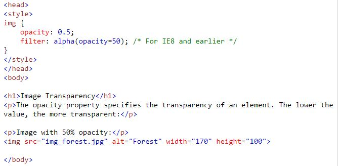
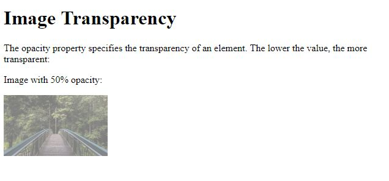
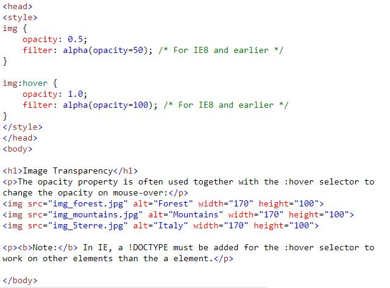
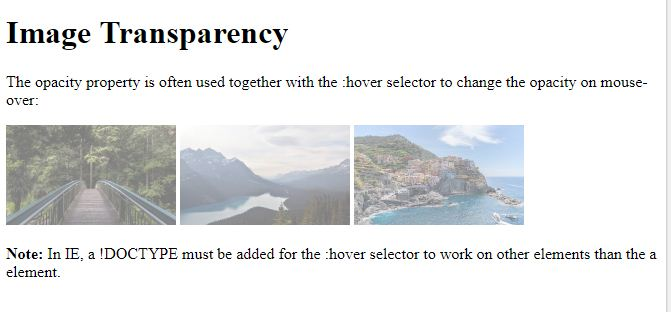

A opacity propriedade especifica a opacidade / transparência de um elemento.
Cabeçalho e corpo:
Resultado:
A opacity propriedade é frequentemente usada junto com o :hover seletor para alterar a opacidade ao passar o mouse:
Cabeçalho e corpo:
Resultado:
